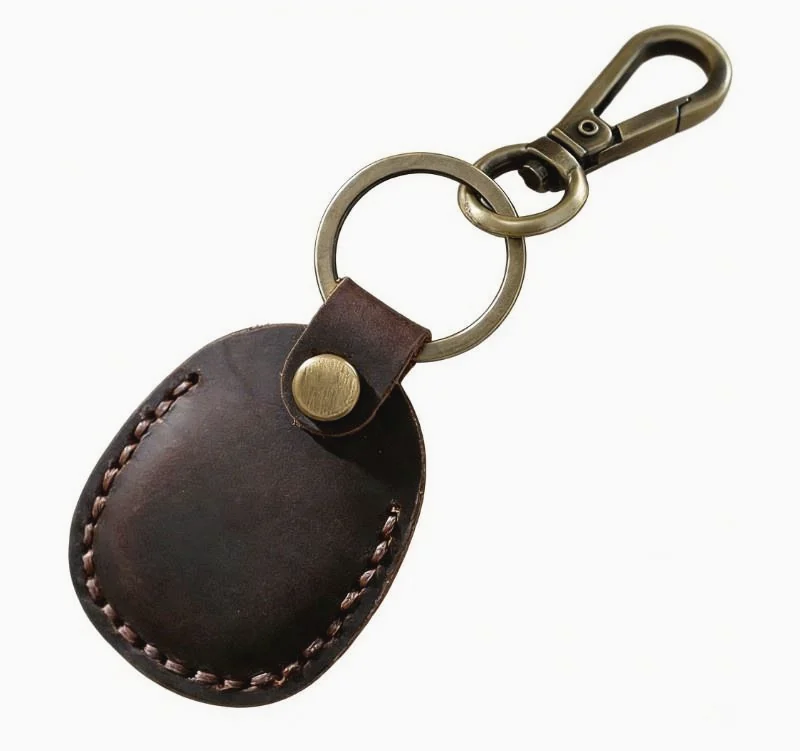

Classic Leather Key Holder
A compact leather key holder reference for private-label sampling, hardware review and logo customization.
This page is a development reference for OEM and private-label projects, not a ready-stock retail listing.

Reference Details for Buyer Review
These references help start a sampling discussion. Final specifications can be adjusted depending on material, hardware and order details.
Reference Views for Sampling Review
Use these views to review leather surface, hardware position, opening structure and possible logo placement before sample development.


Additional hardware, logo-position and structure photos can be prepared during sample discussion.
Key Holder Details Buyers Usually Confirm
The structure can be refined around the buyer's brief, target key type, hardware preference and sample feedback.
Customization Options for Private-Label Orders
HASSION supports key holder development from first reference through sample confirmation and production planning.
What to Send Us for a Faster Quote
A clear brief helps the team review feasibility, sampling details and production planning more quickly.
- Reference photo or physical sample
- Target size and key capacity
- Hardware preference
- Logo file or branding requirement
- Leather / color direction
- Estimated order quantity
- Packaging requirement
- Target market or retail price range, if available
Start a Key Holder OEM Project
Share your reference, logo file, target quantity and hardware preference. Our team can help review structure, sampling details and production feasibility.